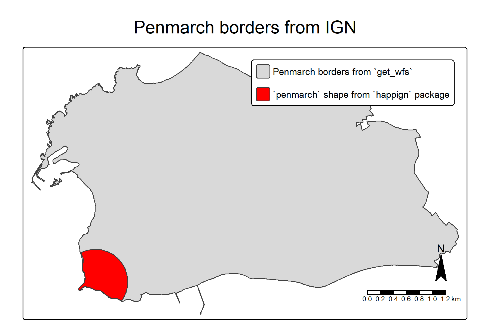

Before starting
We can load the happign package, and some additional
packages we will need (sf to manipulate spatial data and
tmap to create maps)
knitr::opts_chunk$set(
collapse = TRUE,
out.width = "100%",
dpi = 300,
fig.width = 7.2916667,
comment = "#>"
)WFS, WMS, and WMTS services
happign provides access to three web services published
by IGN (Institut national de l’information géographique
et forestière):
WFS (Web Feature Service) Vector data (points, lines, polygons), comparable to formats such as Shapefile or GeoPackage.
WMS (Web Map Service) Raster map images generated on the fly (e.g. PNG, JPEG, GeoTIFF).
WMTS (Web Map Tile Service) Raster map images served as pre-generated tiles, optimized for fast display.
The official OGC specifications for these services are available online: - WFS: https://www.ogc.org/standards/wfs/ - WMS: https://www.ogc.org/standards/wms/ - WMTS: https://www.ogc.org/standards/wmts/
What you need to download data with happign
To retrieve data using happign, two pieces of
information are required:
What to download The name of the layer exposed by the IGN service.
Where to download it An area of interest, provided as an sf geometry (from the
sfpackage).
happign takes care of building the web service requests
and returns data that are immediately usable in R.
Layer names
Layer names can be obtained directly from the IGN website. For example, in the WFS service, the first layer listed in the Administratif category is:
ADMINEXPRESS-COG-CARTO.LATEST:arrondissement
(see https://geoservices.ign.fr/services-web-experts-administratif).
To avoid copying layer names manually, happign provides
the get_layers_metadata() function, which queries the IGN
services directly and always returns the most up-to-date list of
available layers.
This function can be used with WFS, WMS, and WMTS services:
wfs_layers <- get_layers_metadata(data_type = "wfs")
wms_layers <- get_layers_metadata(data_type = "wms-r")
wmts_layers <- get_layers_metadata(data_type = "wmts")
head(wfs_layers)
#> Name
#> 1 OCS-GERS_BDD_LAMB93_2016:oscge_gers_32_2016
#> 2 OCS-GERS_BDD_LAMB93_2019:oscge_gers_32_2019
#> 3 IGNF_GEODESIE:site-rbf
#> 4 IGNF_GEODESIE:site-rdf
#> 5 LIMITES_ADMINISTRATIVES_EXPRESS.LATEST:arrondissement
#> 6 LIMITES_ADMINISTRATIVES_EXPRESS.LATEST:arrondissement_municipal
#> Title
#> 1 OCSGE Gers 2016
#> 2 OCSGE Gers 2019
#> 3 (obsolete) Site RBF
#> 4 (obsolete) Site RDF
#> 5 ADMIN EXPRESS mises a jour en continu - arrondissement
#> 6 ADMIN EXPRESS mises a jour en continu - arrondissement municipal
#> Abstract
#> 1 OCSGE Gers 2016
#> 2 OCSGE Gers 2019
#> 3 RBF
#> 4 RDF
#> 5 ADMIN EXPRESS mises a jour en continu - arrondissement
#> 6 ADMIN EXPRESS mises a jour en continu - arrondissement municipalThe returned object contains metadata for each available layer, including its name, title, and service-specific information.
Downloading data
Now that we know how to identify a layer name, downloading data with
happign only requires a few lines of code.
In the following example, we focus on the town of
Penmarc’h (France). A polygon representing part of this
municipality is included in happign and will be used as the
area of interest.
penmarch <- sf::read_sf(
system.file("extdata/penmarch.shp", package = "happign")
)WFS
The get_wfs() function can be used to download vector
data from IGN WFS services.
In this first example, we retrieve the administrative boundaries of Penmarc’h.
penmarch_borders <- get_wfs(
x = penmarch,
layer = "LIMITES_ADMINISTRATIVES_EXPRESS.LATEST:commune"
)
# Plotting result
tm_shape(penmarch_borders) +
tm_polygons() +
tm_add_legend(
type = "polygons",
position = c("right", "top"),
labels = "Penmarc’h borders from `get_wfs()`"
) +
tm_shape(penmarch) +
tm_polygons(fill = "red") +
tm_add_legend(
type = "polygons",
fill = "red",
position = c("right", "top"),
labels = "`penmarch` shape from `happign`"
) +
tm_title(
"Penmarc’h administrative boundaries (IGN)",
position = tm_pos_out("center", "top", pos.h = "center")
) +
tm_compass(type = "arrow") +
tm_scalebar()
That is all it takes to retrieve vector data using WFS.
From there, you can explore the wide range of datasets provided by IGN. For instance, you may wonder how many roundabout are recorded in Penmarc’h.
Spoiler: there are 8 of them!
Note that the spatial relationship between the area of interest and the queried features can be refined using a spatial predicate.
In the example below, the predicate argument is set to
within(), meaning that only roundabout entirely
contained within the Penmarc’h administrative boundaries are
returned. Available predicates follow the OGC spatial predicates and are
documented in ?spatial_predicates.
roundabout <- get_wfs(
x = penmarch_borders,
layer = "BDCARTO_V5:rond_point",
predicate = within()
)
# Plotting result
tm_shape(penmarch_borders) +
tm_polygons() +
tm_add_legend(
type = "polygons",
position = c("right", "top"),
labels = "Penmarc’h borders from `get_wfs()`"
) +
tm_shape(roundabout) +
tm_symbols(fill = "firebrick", lwd = 2) +
tm_add_legend(
type = "symbols",
fill = "firebrick",
position = c("right", "top"),
labels = "Roundabout"
) +
tm_title(
"Roundabout recorded by IGN in Penmarc’h",
position = tm_pos_out("center", "top", pos.h = "center")
) +
tm_compass(type = "arrow") +
tm_scalebar()
WMS raster
For raster data, the workflow is very similar, but relies on the
get_wms_raster() function. In addition to the layer name,
you must specify a spatial resolution. Note that the resolution must be
expressed in the same coordinate reference system as the
crs parameter.
The Altimétrie category provides several elevation-related datasets. A common example is the Digital Elevation Model (DEM), also known in French as Modèle Numérique de Terrain (MNT).
In the example below, the administrative boundaries of Penmarc’h are
used to download a DEM. For elevation data, we are interested in numeric
pixel values rather than RGB colors, which is why
rgb = FALSE is used.
layers_metadata <- get_layers_metadata("wms-r", "altimetrie")
dem_layer <- layers_metadata[3, 1] # ELEVATION.ELEVATIONGRIDCOVERAGE.HIGHRES
mnt <- get_wms_raster(
x = st_buffer(penmarch_borders, 800),
layer = dem_layer,
res = 5,
crs = 2154,
rgb = FALSE
)
#> 0...10...20...30...40...50...60...70...80...90...100 - done.
#> Warp executed successfully.
# Remove negative values (possible edge artefacts)
mnt[mnt < 0] <- NA
tm_shape(mnt) +
tm_raster(
col.scale = tm_scale_continuous(values = "terrain", value.na = "grey"),
col.legend = tm_legend(title = "Elevation (m)", orientation = "landscape")
) +
tm_shape(penmarch_borders, is.main = TRUE) +
tm_borders(lwd = 2) +
tm_title(
"Digital Elevation Model of Penmarc’h",
position = tm_pos_out("center", "top", pos.h = "center")
) +
tm_compass(type = "arrow") +
tm_scalebar()
Note:
Rasters returned by get_wms_raster() are
SpatRaster objects from the terra package.
For an overview of raster class conversions in R, see: https://geocompx.org/post/2021/spatial-classes-conversion/
WMTS
For WMTS services, no spatial resolution needs to be specified because the images are pre-generated. Instead, a zoom level must be provided. Higher zoom levels correspond to finer spatial detail and higher visual quality.
When the goal is visualization rather than quantitative analysis, WMTS is generally preferable to WMS, as it is faster and better suited for map display.
layers_metadata <- get_layers_metadata("wmts", "ortho")
ortho_layer <- layers_metadata[1, 3] # HR.ORTHOIMAGERY.ORTHOPHOTOS
hr_ortho <- get_wmts(
x = penmarch_borders,
layer = ortho_layer,
zoom = 9
)
tm_shape(hr_ortho) +
tm_rgb() +
tm_shape(penmarch_borders) +
tm_borders(lwd = 2, col = "white") +
tm_title(
"High-resolution orthophoto",
position = tm_pos_out("center", "top", pos.h = "center")
) +
tm_compass(type = "arrow") +
tm_scalebar()
WMTS layers are ideal for background maps, orthophotography, and any use case where visual clarity and performance are more important than direct access to raw pixel values.